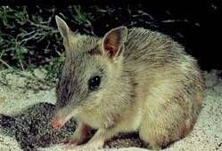
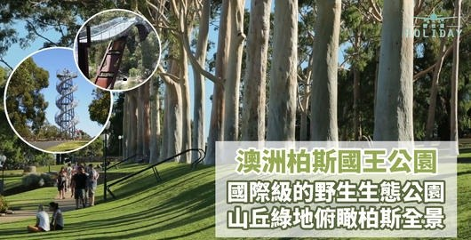

这次到澳洲，女儿陪我们到珀斯一游，住进了水域酒店公寓，其手续简捷的程度让人啧啧称奇。（整个过程，仅仅跟服务人员打了一次交道，那是为了去借一个手机充电插口的转换器。）
网上咨询、预定、付费，通过短信给了一个房门的密码。到的当天，无須到前台签到，找到房间，在门锁上按下密码，推进去就是。一切恰如回到了自己的家!
屋内窗明几净、一尘不染，被褥整洁、散发芬芳，盆栽植物、绽露新芽。女儿忍不住倒向沙发，颠了又颠，唔，真好，真好！
更难得的是，厨房里鍋碗瓢盆，刀叉勺筷样样俱全；油盐酱醋茶一样不缺。
女儿兴致勃勃、撸起袖子、亲自下厨，做了油焖帝王虾，味道还真不错！这些全靠她之前做足了功课，了解得仔细，才安排的如此妥帖。我们暗暗思忖：女儿在外拼搏多年，能力已大有长进。
我们向国王公园出发了！
女儿打开了歌谷地图，又下载了珀斯的离线地图，熟练地标上了出发和目标位置。依次点击了步行和导航两个选项，这时，一条带有箭头的蓝线连接了始终两点，这正是我们所需要的路线图啊！
我们对步行导航产生了兴趣。在女儿的帮助下，揣着手机，依着蓝线的指引，边看边行。女儿在一旁悄悄地提醒：千万不能边走边看手机啊，这边已经出了好多起事故了！那个语气就像以往我们嘱咐她时一样。
我们向前才走了十分钟光景，歌谷地图提示要右拐。可是右面没有路啊，导航会出错吗？右侧是陡峭的山坡，有一部十分宽畅、结实的铁制扶梯，仰头一望，居然看不到顶，恐怕有二、三百级台阶那！许多俊男靓女，短衣短裤，疾步上下、满头大汗， 正忙着攀登健身呢！
犹豫了片刻，我们还是选择相信歌谷地图：右转，登上铁扶梯！
扶梯虽陡，近乎垂直，却没有想象的那么高。攀爬了不久，我们便来到了顶部。
刚一探头，便觉得眼前一亮，好一片开阔的草坪啊！那草坪修剪整齐、随地势自然延绵起伏直至天边，远处天更蓝、云更白、艳阳高照， 指示牌上一个红色的箭头告诉我们国王公园已经近在咫尺啦！
女儿当时选择水域公寓的原因之一就是距离国王公园近呀。但没有想到居然这么近！
时值早春，乍暖还寒，大地开始复苏。踏入公园，空气中弥漫着淡淡的草味花香，沁人心脾；品种繁多、叫不出名来的各种野花。正从小径边、水塘旁、从公园的各个角落探出头来。它们一点不见张扬的大红大紫，都是淡淡的、粉粉的色彩。却怡然挥洒成漫山遍野的妩媚。
我们踩着软绵绵的、绿絲绒般的草坪，在谷歌地图的指引下。向一个又一个景点走去。
我们来到了山坡边上的一处观景台，这里居高临下，是俯瞰整个珀斯美景的绝佳去处，从这里望去，高楼林立的市中心、碧波荡漾的天鹅河和绵延不断的达令山尽收眼底。
难得的是这里一点不见国内公园拥挤的现象，游客寥寥无几，当我们尽情的取景、留影时，两位洋老太在一边笑盈盈的行注目礼。
我们沿着公园的林荫大道缓缓前行，两边是高耸入云的桉树林，树形优美，白色的树干整洁端庄。前面是享誉世界的西澳植物园，各种特色植物在眼前穿梭而过。凡是那些枝、叶、花、果有些特别的植物，都会引起我们的兴趣，我们会停下脚步细细的看一下信息牌。女儿的工作是翻译，出于工作的本能，她查一下它们的中文名称，并收藏入自己的词汇库。
再往前走，在一大片密密的灌木丛前， 赫然树立着一块告示牌，上画一只硕大的老鼠。
“哟，这里有老鼠出没！”
“但老鼠没有这么大的耳朵呀！”
请教了词典以后才知道，这叫袋狸，被澳洲人称为“毛茸茸的小淘气”，已经列入澳大利亚濒危物种排行榜的第五名了！
继续向前，进入了荣誉大道，这里每一棵大树下都竖立着小小的纪念牌，女儿蹲下身子，为我们翻译了牌上的文字，原来这里每一棵树都代表一位在战争中为国捐躯的英雄，所以被称为“有生命的纪念”。当看到一位小英雄是个二等兵，牺牲时年方十八，不免令人生出许多感叹来。
我们还见识了点缀在公园中的众多纪念雕塑，它们记录了珀斯历史中重要的事件和人物；参观了土著文化艺术馆，很久以前，这里是澳洲土著人重要的聚集场所。
一路上还和形形色色的鸟儿打了招呼，时间不早了，是和它们说再见的时候了。
谷歌地图告诉我们，就在不远处，恰好有一个回程的公交站。
披着夕阳的余晖，我们踏上了归程。
呵！今天可谓收获满满，饱览了风景，还学习了地图的使用，这对我们今后外出旅游，可是大有作用呢！
（本文刊登在2019.9.30《长白侨讯》）

澳洲的袋狸
